DeepSeek-V3 Deep Dive · Section 1 of 5
FP8 Mixed-Precision Training
Training a 671B-parameter model in 8-bit floating point — within 0.25% of BF16 loss, at roughly 2× the compute throughput.
DeepSeek-AI, 2024 · arXiv:2412.19437
Before
BF16 was mandatory — naive FP8 breaks at scale
Frontier scale, zero precedent
Every LLM >100B params trained in BF16. FP8 had only been shown small-scale — nobody had validated it end-to-end at extreme scale.
A dynamic-range trap
E4M3: decent precision, narrow range. E5M2: wide range, coarse precision. At scale, activations and gradients contain outliers neither format alone survives.
One outlier poisons the tensor
A single scale factor per whole tensor is dominated by its largest element — it crushes every normal-magnitude value toward zero.
Hardware caps it further
Hopper Tensor Cores accumulate FP8 matmuls at only ~14-bit internal precision — a ceiling that hurts before quantization quality even enters.
FP8 Mixed-Precision Training
The DeepSeek-V3 fix · 1/3
Not everything runs in FP8
- Only the 3 compute-dense GEMMs go FP8 — Fprop (forward), Dgrad, Wgrad (activation/weight backward) — roughly doubling compute vs. BF16.
- Precision-sensitive, low-FLOP ops stay BF16/FP32 — embeddings, output head, MoE gating, RMSNorm, attention.
- These dominate accuracy sensitivity but are a tiny fraction of FLOPs — protecting them is nearly free.
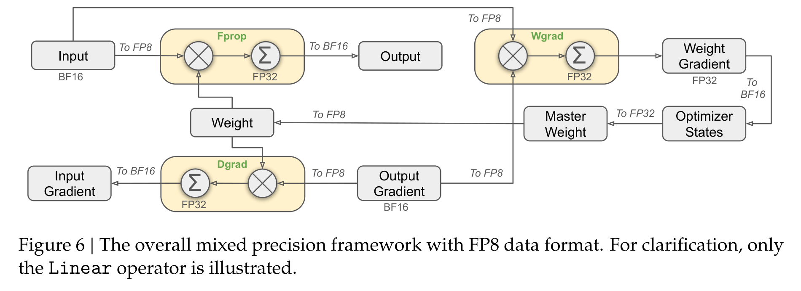
Fprop / Dgrad / Wgrad dtype flow — DeepSeek-V3 Technical Report
FP8 Mixed-Precision Training
The DeepSeek-V3 fix · 2/3
Kill the outlier at its source
- Fine-grained quantization — activations scaled per 1×128 tile, weights per 128×128 block. An outlier now only inflates its own small group's scale.
- Online quantization — max-abs computed on-the-fly per tile/block.
- FP32 accumulation promotion — partial products promoted to FP32 every NC=128 elements along the inner dimension, recovering near-FP32 accumulation on FP8 Tensor Cores.
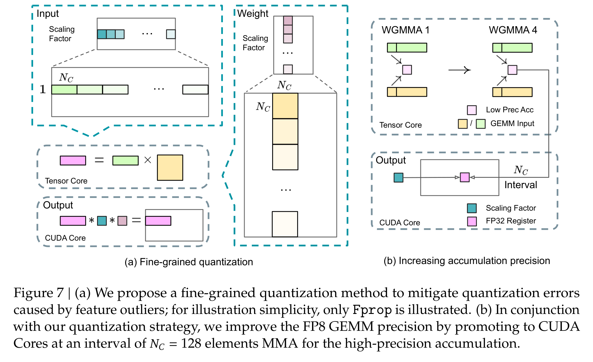
Fine-grained quantization (a) & increasing accumulation precision (b)
FP8 Mixed-Precision Training
The DeepSeek-V3 fix · 3/3
E4M3 everywhere, and compressed storage
E4M3 everywhere
Per-tile scaling shares exponent bits within a group, restoring the dynamic range E4M3 lacks alone. So every GEMM keeps E4M3's extra mantissa bit — precision the old hybrid recipe (E4M3 fwd / E5M2 bwd) sacrificed on backward passes.
Compressed storage & comms
AdamW moments in BF16 · cached activations in FP8 (half the memory) · activations cast to FP8 before the MoE all-to-all dispatch.
FP8 Mixed-Precision Training
What it buys us
Stable at 671B scale, and roughly 2× faster
- First demonstration FP8 is stable end-to-end at frontier (671B MoE) scale.
- A software precursor to hardware microscaling on NVIDIA Blackwell.
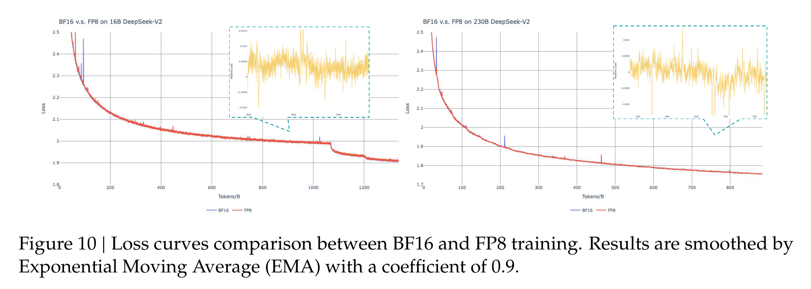
BF16 vs. FP8 loss — 16B & 230B DeepSeek-V2 ablations
FP8 Mixed-Precision Training
Why a DS/DE should care
Precision is per-location, not a global switch
- Quantize aggressively where FLOPs live; protect the few numerically sensitive ops — gating, softmax, layernorm statistics.
- Fight outliers with fine-grained (block-wise) scaling + high-precision accumulation, not one scale per tensor.
- “Granularity beats a global scale” applies any time you quantize models — for training or inference.
DeepSeek-V3 Technical Report · arXiv:2412.19437 · Section 1 of 5
DeepSeek-V3 Deep Dive · Section 2 of 5
Fine-Grained MoE & Expert Load Balancing
256 small routed experts (+1 shared), 8 activated per token, kept balanced by a learnable per-expert bias — not an auxiliary loss that taxes quality.
DeepSeek-AI, 2024 · arXiv:2412.19437
Before
Coarse experts, collapsing routers, a quality-taxing loss
Coarse experts under-specialize
Classic MoE: a few large experts, top-1/2 routing. Each absorbs a wide mix of knowledge, general knowledge gets redundantly duplicated, and few expert combinations are even possible per token.
Routing collapse
The router is learned jointly with the LM — a rich-get-richer dynamic. Popular experts draw more tokens, more gradient, get picked even more; most experts starve and their parameters go to waste.
The aux-loss remedy has a real cost
Standard fix: an auxiliary load-balancing loss pushing assignments toward uniform. That's an interference gradient — enough weight to guarantee balance measurably degrades model quality.
Device & communication cost
Under expert parallelism, routing becomes a distributed all-to-all. Spread-out experts explode cross-node traffic; imbalance causes GPU stragglers and forces token dropping under capacity limits.
Fine-Grained MoE & Expert Load Balancing
The DeepSeek-V3 fix · 1/3
Many small experts, one always-on generalist
- Fine-grained experts + shared-expert isolation — splitting into many small experts makes 8-of-256 yield combinatorially more expert combinations, so specialization gets finer; the always-on shared expert absorbs common knowledge so routed experts don't each re-learn it.
- Sigmoid affinity router — token–expert affinity
s = Sigmoid(uᵀ·eᵢ), switched from softmax (V2).
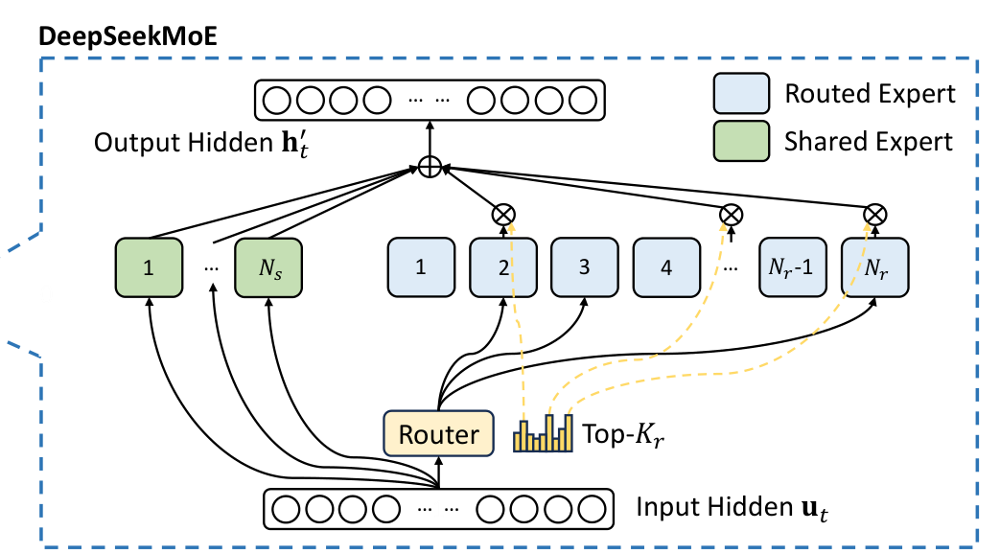
DeepSeekMoE structure — DeepSeek-V3 Technical Report, Fig. 2
Fine-Grained MoE & Expert Load Balancing
The DeepSeek-V3 fix · 2/3
Balance via a controller, not a loss
- Learnable bias bᵢ per expert, added to the affinity for top-K selection only — routing picks the top-8 of
s + bᵢ, but the gating weight multiplying an expert's output still comes from the originals(no bias). - A feedback controller adjusts the bias every step — overloaded expert: decrease bias by γ; underloaded expert: increase bias by γ.
- This steers which experts get chosen to fix balance — without injecting a distortion gradient into the LM loss.
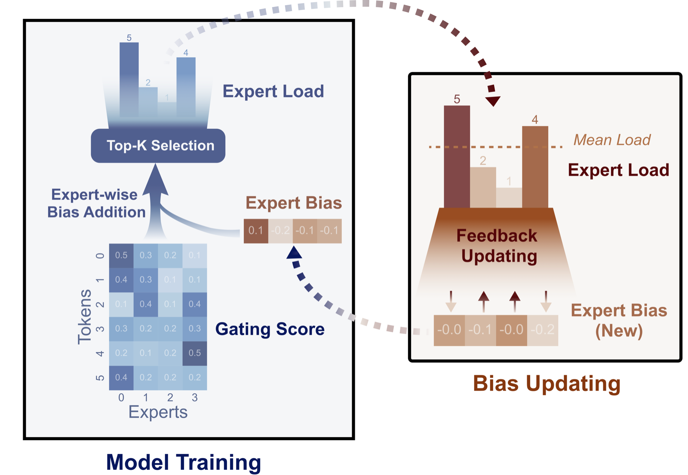
Loss-free bias feedback loop — Wang et al. 2024, arXiv:2408.15664, Fig. 1 (method DeepSeek-V3 §2.1.2 adopts)
Fine-Grained MoE & Expert Load Balancing
The DeepSeek-V3 fix · 3/3
Balancing the physical system, too
Node-limited routing
Each token's 8 experts are confined to ≤4 nodes, capping cross-node all-to-all traffic and letting compute/communication overlap.
No token dropping
In training or inference — the balance is real, so nothing overflows a capacity limit.
Fine-Grained MoE & Expert Load Balancing
What it buys us
Frontier capacity at 5.5% active params
- Ablation on two 16B MoE models (~1.33T tokens), comparable balance in both — removing the interference gradient recovers model quality and expert specialization that auxiliary losses suppress.
- Balance is enforced batch-wise, not per-sequence — a single-domain sequence isn't forced to spread uniformly, so domain-relevant experts can dominate, yielding clearer, less-redundant specialization.
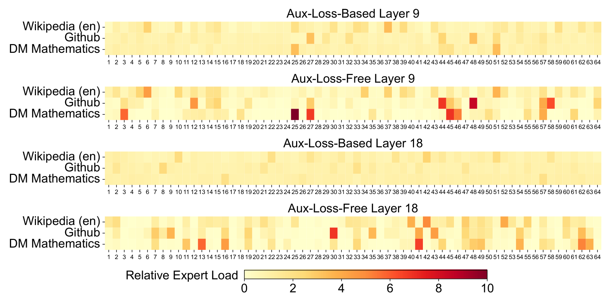
Expert load, aux-loss-free vs. aux-loss-based — DeepSeek-V3 Technical Report, Fig. 9
Fine-Grained MoE & Expert Load Balancing
Why a DS/DE should care
Two balancing problems inside “MoE”, two tools
- Statistical balance across experts (avoid collapse) — solved here by a controller-tuned bias, not a loss.
- Physical balance across GPUs/nodes (avoid stragglers & comms blowup) — solved by node-limited routing, expert placement, and redundant experts.
- The deeper lesson: when a regularization loss fights your main objective, consider moving the constraint out of the loss and into a control mechanism that doesn't distort gradients.
DeepSeek-V3 Technical Report · arXiv:2412.19437 · Section 2 of 5
Appendix · Subsequent developments · 1 of 5
DeepEP: the expert-parallel communication library
What it is
An expert-parallel all-to-all dispatch/combine kernel library (FP8-capable), open-sourced during DeepSeek's Feb-2025 "open-source week" — built to carry the routing decisions the model computes each step.
Communication substrate for the balancing strategy
Node-limited routing (§2.1.2), expert-to-device allocation, and redundant experts (§3.4) live in the DeepSeek-V3 design and serving stack; DeepEP's kernels are engineered to carry exactly that traffic pattern.
Two kernel families
"Normal" kernels serve training and inference-prefill; "low-latency" pure-RDMA kernels serve decode.
DeepSeek-V3's own training
Used the auxiliary-loss-free bias controller (§2.1.2) to balance experts — other stacks like Megatron-Core ship their own aux-loss/sinkhorn balancing.
github.com/deepseek-ai/DeepEP
Appendix · Subsequent developments · 2 of 5
EPLB: the expert-parallel load balancer
What it is
The deployed expert-placement algorithm (eplb.py), open-sourced the same Feb-2025 "open-source week" as DeepEP — given measured per-expert load, it duplicates heavy-loaded experts and assigns replicas to GPUs to equalize per-GPU work. DeepEP moves the tokens; EPLB decides where the experts sit.
Hierarchical policy
Prefill, smaller EP degrees: pack expert groups onto nodes first, then replicate/place within a node — preserves node-limited routing's group locality, minimizing inter-node traffic.
Global policy
Decode, larger EP degrees: replicate experts globally regardless of group, spreading replicas across all GPUs — at EP320 scale, group locality isn't worth preserving.
Relation to the paper
The productionized form of §3.4's redundant-experts strategy and expert-to-device allocation, driven by measured load rather than a static assignment.
github.com/deepseek-ai/EPLB
Appendix · Subsequent developments · 3 of 5
Sparsity scaling law sized K2's expert pool
- A pre-training sparsity scaling law: hold activated experts fixed at 8 (constant FLOPs/token), vary total experts → sparsity levels 8 / 16 / 32 / 48. Higher sparsity consistently lowers loss.
- At a fixed validation loss of 1.5, sparsity-48 needs 1.69× / 1.39× / 1.15× fewer FLOPs than sparsity 8 / 16 / 32 respectively — the result that motivated K2's 256→384 expansion.
Kimi K2 Technical Report · arXiv:2507.20534 · Fig. 5, Table 2
Appendix · Subsequent developments · 4 of 5
Routed + shared-expert MoE now dominates
| Model | Routed + shared | Total / active | >100B? |
|---|---|---|---|
| DeepSeek-V4-Pro | 384 + 1 | 1.6T / 49B | Yes |
| Kimi K2 | 384 + 1 | 1.04T / 32.6B | Yes |
| GLM-5 / 5.2 | 256 + 1 | 744B / 40B | Yes |
| Llama 4 Maverick | 128 + 1 | 400B / 17B | Yes |
| Qwen 3.5 (397B-A17B) | 512 + 1 | 397B / 17B | Yes |
| Gemma 4 (26B-A4B) | 128 + 1 | 25.2B / 3.8B | No |
| MiniMax-01 / M2 | 32 / 256, no shared | 456B/45.9B · 229.9B/9.8B | Yes |
| DBRX | 16, no shared | 132B / 36B | Yes |
Red = follows the routed+shared pattern · italic = routed-only minority · newest model per builder shown · Gemma 4's MoE variant follows the pattern but sits far below >100B scale
GLM-5.2 arXiv:2602.15763 · DeepSeek-V4, Llama 4, Qwen 3.5 & Gemma 4 model cards
Appendix · Subsequent developments · 5 of 5
EP is replacing TP as the sharding axis
- Routed-expert FFNs hold ~80–90% of params in a fine-grained MoE (≈97% DeepSeek-V3, ≈96% Qwen3-235B) — so EP alone captures nearly all vRAM pressure; the residue goes to ZeRO/FSDP or DP-attention.
- Coverage with little regret: TP shards attention and MLP both, but with experts this dominant, EP-only sharding sheds TP's cost for almost no regret.
- Lighter communication: TP all-reduces full activations twice per block, every layer; EP needs only a per-MoE-layer all-to-all [§3.2.1], cut further by node-limited routing [§2.1.2] and hidden by DualPipe — a co-design result, not unconditional (at very wide EP the all-to-all can itself dominate).
- Cross-node scaling: TP's all-reduce collapses over inter-node interconnect (stays ≤8, one NVLink domain); EP's all-to-all scales across many nodes (EP64/8 nodes training; EP32→EP320 inference).
-
Training — no TP in either recipe:
- DeepSeek-V3: PP16 (DualPipe) + EP64 + ZeRO-1 [§3.2]
- Kimi K2: PP16 + EP16 + ZeRO-1
-
Inference — three sources of authority, don't conflate them:
- Paper design [§3.4]: EP32 prefill / EP320 decode + DP-attention, residual TP4 on attention only
- DeepSeek's own production system, not the paper: EP144 decode, DP144, 18 nodes/unit, 32 redundant experts, 2+1 experts/GPU
- LMSYS/SGLang, independent reproduction: up to 3.3× prefill / 5.2× decode vs. TP16
- Scope: EP replaces TP, not ZeRO/FSDP or PP.
arXiv:2412.19437 · DeepSeek Day-6 inference overview · LMSYS large-scale EP · Megatron-Core parallelism guide
DeepSeek-V3 Deep Dive · Section 3 of 5
Multi-Head Latent Attention (MLA)
Cache one small compressed latent per token instead of full per-head keys and values — the piece that makes long-context inference economical.
DeepSeek-AI, 2024 · arXiv:2412.19437
Before
The KV cache, not compute, caps serving
KV cache is the bottleneck
MHA must cache the keys and values of every previous token during autoregressive decoding. That cache — not compute — caps max batch size and context length, and dominates memory-bandwidth traffic during generation.
And it's per layer, per token
For V3's shape, MHA would cache 2·nh·dh = 32,768 elements per token per layer.
MQA / GQA trade quality for cache size
MQA shares a single K/V head across all query heads — a big cache cut, but measurable quality loss. GQA interpolates. Neither recovers full-MHA capacity.
Open problem
Cut the KV cache by a large factor without the MQA/GQA quality tax.
Multi-Head Latent Attention (MLA)
The DeepSeek-V3 fix · 1/4
One small latent, not a cache per head
- Low-rank joint KV compression — down-project the hidden state to a small latent
cKV = WDKV·h, with dc = 512 (≪ nh·dh = 16,384). - Keys/values are reconstructed by up-projections
WUK, WUVonly when needed. - Only the latent is cached.
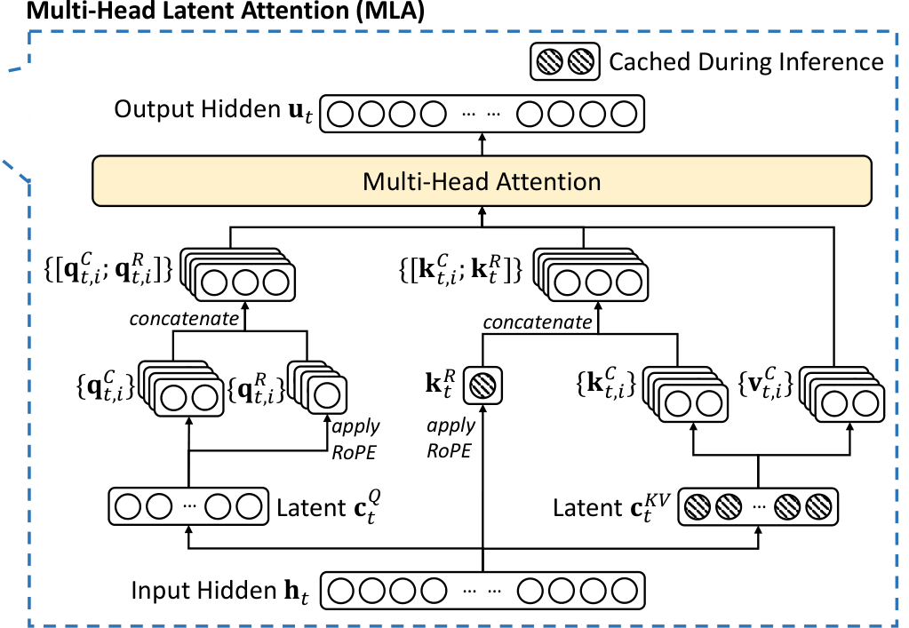
Multi-Head Latent Attention data flow — DeepSeek-V3 Technical Report, Fig. 2
Multi-Head Latent Attention (MLA)
The DeepSeek-V3 fix · 2/4
Why caching just the latent costs nothing extra
- Intuition — instead of unpacking the latent back into full per-head keys for every cached token and dotting each against the query, fold that "unpack" step into the query's own projection once, up front. The query effectively learns to read the compressed latent directly, so per-head keys are never rebuilt. The value side mirrors this: unpacking folds into the output projection instead.
- The shortcut:
qt·kj = ctQᵀ(WUQᵀWUK)cjKV— the middle term doesn't depend on the token or its position, so it collapses into one fixed matrix, folded in once instead of reconstructed per token. - Payoff: the content-side cache holds only the 512-d latent, and decode does no extra reconstruction compute to use it — this is what makes "cache the latent, not the keys" actually free. (The positional side adds one more small piece, next.)
Multi-Head Latent Attention (MLA)
The DeepSeek-V3 fix · 3/4
Two computation modes for two different workloads
- Materialize / “MHA mode” — up-project the latent back to full per-head K/V, run standard attention. For training & prefill: many tokens at once, compute-bound, so materializing once and reusing it is FLOP-efficient.
- Absorb / “MQA mode” — fold the up-projections in (the trick above), attend directly on the shared latent. For decoding: one token per step, memory-bandwidth-bound, so the tiny latent cache is what matters.
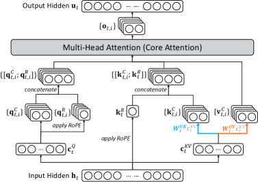
MHA mode — training & prefill
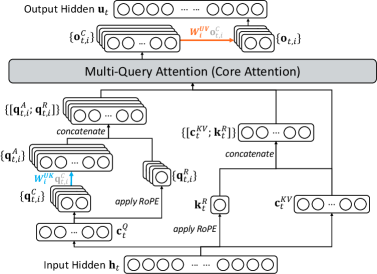
MQA mode — decoding
DeepSeek-V3.2 Technical Report, arXiv:2512.02556, Appendix A, Fig. 7 — same MLA mechanism DeepSeek-V3 uses
Multi-Head Latent Attention (MLA)
The DeepSeek-V3 fix · 4/4
RoPE breaks the fold, so position decouples
- Intuition — RoPE rotates each key by an amount that depends on its position. That rotation would land in the middle of the pre-folded shortcut matrix above — and because it differs for every token pair, it can't be baked into a single fixed matrix ahead of time. The shortcut falls apart, forcing keys to be rebuilt from the latent at every step.
- Fix: don't rotate the compressed content at all — carry position on a small separate channel that gets its own rotation: per-head decoupled query
qR = RoPE(WQR·cQ), one shared decoupled keykR = RoPE(WKR·h), both dim dhR = 64, concatenated onto the content parts. - Each attention score = content term (from the latent, absorption-friendly) + positional term (from the decoupled channel).
Multi-Head Latent Attention (MLA)
What it buys us — and why it matters
576 vs. 32,768 — ~57× smaller, no quality loss
- Unlike MQA/GQA, MLA doesn't trade quality for compression — reported performance on par with or better than MHA; each head still reads its own slice of the shared latent, preserving per-head diversity. This small per-token cache is what makes V3's 128K context economically serveable.
- The serving bottleneck for long-context LLMs is usually KV-cache memory bandwidth, not FLOPs — MLA shows you can attack it with a low-rank bottleneck rather than by throwing away heads, but only if you handle position encoding carefully.
- The ~57× is against an MHA baseline nobody ships — against modern GQA the gap is smaller: ~2.7× vs. Qwen3-235B-A22B's GQA (4 KV heads × 94 layers ≈ 188 KB/token vs. MLA's ~70 KB), and roughly parity in per-token growth vs. Gemma 3 27B's GQA+sliding-window hybrid (~80 KB/token) — but that comes from truncating 5 of 6 layers to a 1024-token window plus a large fixed buffer; MLA reaches its number with full attention every layer.
DeepSeek-V3 Technical Report · arXiv:2412.19437 · Section 3 of 5
DeepSeek-V3 Deep Dive · Section 4 of 5
Multi-Token Prediction
Add a small module that predicts the 2nd-next token during training (keeping the full causal chain), then discard it or reuse it as a speculative-decoding draft head
DeepSeek-AI, 2024 · arXiv:2412.19437
Before
Next-token prediction gives one sparse signal per position
- Each position gives a single, relatively sparse learning signal — the model is never explicitly trained to look ahead or pre-plan representations beyond the immediate next token.
- Gloeckle et al. (2024) — parallel multi-token prediction with independent heads densifies the signal, but breaks the causal chain: each head sees only the shared trunk, not the predicted intermediate tokens.
- The result: extra tokens are predicted independently, with no conditioning on each other — losing the autoregressive structure that makes sequential modeling work.
DeepSeek-V3 Technical Report · §2.2 · Gloeckle et al. (2024)
The DeepSeek-V3 fix · 1/2
Sequential MTP modules that preserve the causal chain
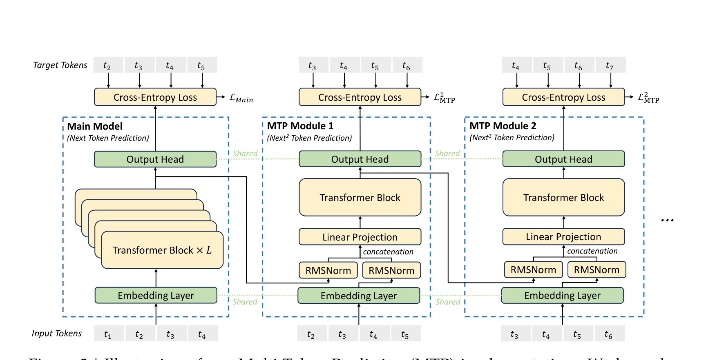
Figure 3 from DeepSeek-V3 §2.2 — sequential MTP modules with shared embedding/head and preserved causal chain
- V3 predicts D additional tokens with sequential modules — module k conditions on module k−1's representation.
- The complete causal chain is kept at every prediction depth (the explicit contrast with Gloeckle's parallel independent heads).
- Each MTP module reuses the main model's shared embedding and shared output head, plus its own Transformer block
TRM_kand projectionM_k.
DeepSeek-V3 Technical Report · §2.2 · Fig. 3
The DeepSeek-V3 fix · 2/2
Plan one step ahead, chained to stay causal
- Denser signal from the same data — every position now also answers "what comes after the next token?", so each token yields D+1 supervised predictions instead of 1 (data efficiency).
- Forced forward planning, kept causal — module k predicts on top of module k−1's conclusion (not in parallel), so the trunk is pressured to encode anticipatory representations and the autoregressive chain stays whole — the deliberate fix for Gloeckle's independent heads. It reuses the main model's own shared embedding and output head (same task, one step deeper); only a small
TRM_kblock + projectionM_kare new per depth. - A gentle, self-tapering nudge — training adds one cross-entropy term per depth, averaged and weighted by λ so it nudges rather than rivals the main loss; λ drops 0.3&to;0.1 mid-training so the primary objective reclaims the wheel near convergence. D = 1 in V3.
DeepSeek-V3 Technical Report · §2.2, §4.2
What it buys us
Better reasoning and coding, plus ~1.8× speedup
- Small MoE (15.7B/2.4B, 1.33T tokens): HumanEval 26.8 vs 20.7, GSM8K 31.4 vs 25.4, MMLU 53.3 vs 50.0.
- Large MoE (228.7B/20.9B, 540B tokens): HumanEval 53.7 vs 44.5, DROP 70.6 vs 68.5 — improvement holds as scale increases.
- Speculative decoding: MTP-as-draft-head achieves 85–90% token acceptance, giving ~1.8× decoding TPS.
DeepSeek-V3 Technical Report · Table 4 · §5.4.3
What it buys us
Reuse as draft head — how deep?
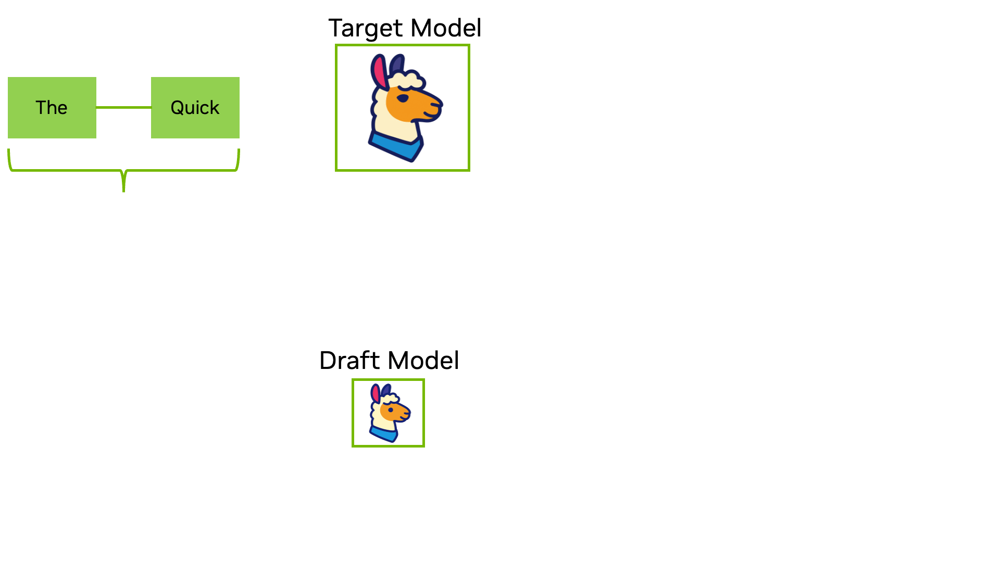
NVIDIA Technical Blog Fig. 1 — speculative decoding: draft proposes, target verifies in parallel
The trained MTP module becomes a speculative-decoding draft head — it proposes future tokens and the main model verifies in parallel, no separate draft network. Later models mostly stayed shallow, one deepened via parameter sharing:
| Model | MTP depth | Note |
|---|---|---|
| DeepSeek-V3 | 1 module | 85–90% accept → ~1.8× TPS |
| DeepSeek-V4 | 1 ("MTP-1") | DSpark: 5-token blocks instead |
| GLM-5 / 5.2 | 3 layers, shared params | accept len 2.76 @ 4 steps (vs. 2.55) |
| Qwen 3.5 | 1 head | mtp_num_hidden_layers: 1 |
| Gemma 4 | 4-layer separate drafter | cross-attends main model's KVs; up to 3× |
Acceptance compounds down the chain and stays high only at the first 1–2 positions — later ones extrapolate from unverified drafts, so gains saturate fast. Most ship depth 1; GLM-5's depth 3 comes from sharing params, not adding them.
DeepSeek-V3 Technical Report · §2.2, §5.4.3 · NVIDIA Blog · GLM-5.2 arXiv:2602.15763 · DSpark arXiv:2607.05147
Why a DS/DE should care
One architectural addition yields two independent wins
- Win 1: A free training-time quality boost (drop it at serving, zero cost).
- Win 2: An optional ~1.8× inference speedup by reusing the same module as a speculative-decoding draft head.
- General lesson: auxiliary training objectives that densify the signal can pay off even when discarded. If you preserve the right structure (causal ordering here), a training-time head can be recycled into an inference-time accelerator.
DeepSeek-V3 Technical Report · arXiv:2412.19437 · Section 4 of 5
Appendix · MTP module internals
Inside an MTP module: five steps
- Gather two inputs — the previous depth's hidden state (what the model already concluded) + the embedding of the token one step ahead; RMSNorm + concatenate → Eq. 21:
h′_i^k = M_k [ RMSNorm(h_i^{k−1}) ; RMSNorm(Emb(t_{i+k})) ] - Refine — a Transformer block mixes them into a deeper representation → Eq. 22:
h_{1:T−k}^k = TRM_k( h′_{1:T−k}^k ) - Read out — the shared output head (same one the main model uses) turns it into next-token probabilities → Eq. 23:
P_{i+k+1}^k = OutHead( h_i^k ) - Score — cross-entropy against the true token, per depth → Eq. 24:
ℑMTP^k = CrossEntropy( P_{2+k:T+1}^k , t_{2+k:T+1} ) - Combine — average across depths, scale by λ, add to the main loss → Eq. 25:
ℑMTP = (λ/D) Σ_{k=1}^{D} ℑMTP^k - EAGLE similarity: Causal-chain principle matches EAGLE (Li et al., 2024b), but EAGLE optimizes for speculative decoding while V3 uses MTP primarily to improve training.
DeepSeek-V3 Technical Report · §2.2 · Fig. 3
Appendix · Why speculative decoding is faster
The throughput paradox: more FLOPs, yet faster
- Autoregressive decoding is memory-bandwidth-bound, not compute-bound. At low batch sizes (interactive inference), each step streams the full model weights from HBM, then emits a single token. Matrix units idle waiting for weight data — the bottleneck is memory bandwidth, not FLOPs.
- Verifying K candidates costs ≈ the same wall-clock as emitting 1. In speculative decoding, a draft proposes K candidates, and the main model verifies all K in one parallel forward pass. The weight-load dominates; extra FLOPs for K tokens ride on otherwise-idle compute — nearly free.
- Rejection doesn't break correctness. When the main model rejects a draft token, it falls back to generating its own token — output is identical to plain decoding. Rejected drafts waste FLOPs but never compromise correctness.
- Resolution of the paradox: Strictly more total FLOPs, yet throughput rises when acceptance is high. The key is converting K sequential memory-bound steps into 1 parallel step — the memory-bound latency is what mattered, not the FLOP count. V3's MTP achieves 85–90% acceptance, yielding ~1.8× TPS.
- General lesson: When memory-bandwidth-bound, adding FLOPs that execute in parallel with weight-load can be nearly free. Speculative decoding exploits this by batching verification work into idle compute time. The craft is designing a cheap draft whose proposals align with the main model — hence MTP's causal-chain-preserving design.
DeepSeek-V3 Technical Report · §5.4.3 · NVIDIA Blog · LLM inference bottlenecks literature
DeepSeek-V3 Deep Dive · Section 5 of 5
DualPipe
Bidirectional pipeline scheduling that hides communication behind computation — the piece that keeps a cross-node 671B MoE from being communication-bound.
DeepSeek-AI, 2024 · arXiv:2412.19437
Before
Pipeline bubbles and cross-node communication tax
Pipeline bubbles waste compute
Prior schedules like 1F1B have bubble = (PP−1)(F+B) — the fill/drain phase idles a growing fraction of stages as pipeline depth PP increases. ZB1P shrinks it by splitting backward but still scales with PP.
Cross-node expert parallelism adds all-to-all
MoE requires an all-to-all dispatch (route tokens to expert nodes) and all-to-all combine per layer. Over InfiniBand, the compute:communication ratio is ~1:1 — without hiding comm, step time ~doubles.
The ceiling
Communication threatens to become the bottleneck on how far fine-grained MoE can scale. FP8 made compute cheap; now the exposed ceiling is data movement.
DualPipe (Pipeline Parallelism + Compute/Comm Overlap)
The DeepSeek-V3 fix · 1/3
Bidirectional schedule halves the bubble
- Feed micro-batches from both ends simultaneously — two streams enter from opposite directions and meet in the middle, each only traversing half the pipeline before overlapping the other stream's work.
- This halves the effective fill/drain depth from
(PP−1)to(PP/2−1). - The DualPipe bubble formula:
((PP/2) − 1)(F&B + B − 3W)— whereF&Bis the time of two mutually overlapped forward and backward chunks. ThePP/2−1factor is the key improvement. - Enables both all-to-all and pipeline (PP) communication to be fully hidden behind computation.
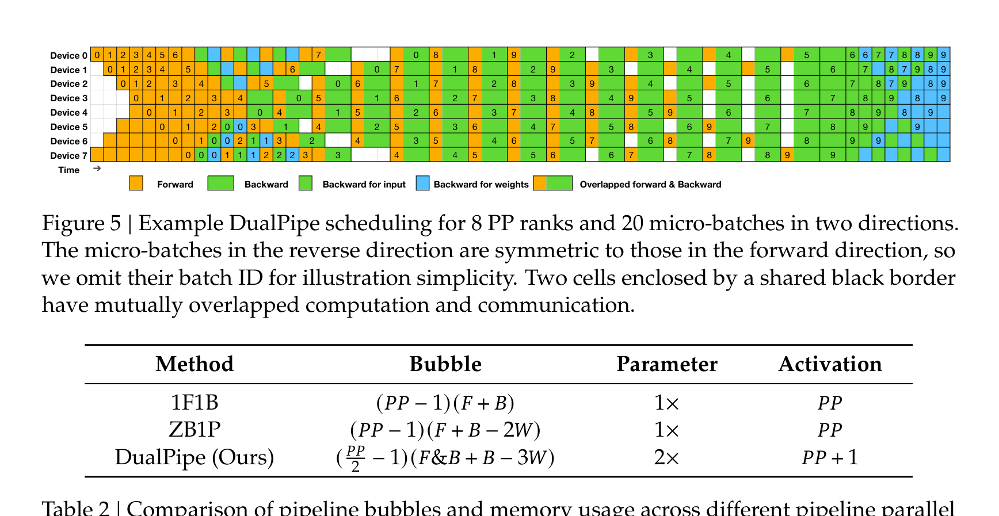
DualPipe bidirectional scheduling — DeepSeek-V3 Technical Report, Fig. 5
DualPipe (Pipeline Parallelism + Compute/Comm Overlap)
The DeepSeek-V3 fix · 2/3
Hide all-to-all behind computation
- Split each chunk into four components — attention → all-to-all dispatch → MLP → all-to-all combine. In backward, attention and MLP further split into backward-for-input (B) and backward-for-weights (W), à la ZeroBubble.
- Manually rearrange components so one micro-batch's compute overlaps another's all-to-all communication.
- The mechanism: GPU SM-ratio tuning — dedicate a small fixed set (20 SMs) to run the all-to-all and PP comm kernels concurrently with the rest doing attention/MLP compute. Tune the partition so comm finishes within the compute window.
- Result: comm runs in parallel with (not serially before/after) computation → fully hidden, costing zero extra step time.
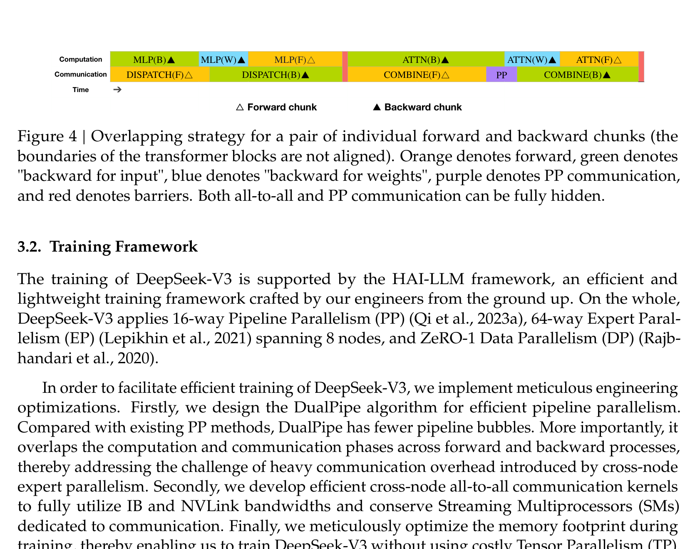
Intra-chunk compute-comm overlap strategy — DeepSeek-V3 Technical Report, Fig. 4
DualPipe (Pipeline Parallelism + Compute/Comm Overlap)
The DeepSeek-V3 fix · 3/3
ZeroBubble-style backward split + memory trade-off
- Why split backward into B and W — a normal backward computes input-gradients and weight-gradients together. But the input-gradient part (B) is what propagates downstream to earlier stages (on the critical path), while the weight-gradient part (W) only updates local parameters (no downstream dependency, can be deferred). Splitting moves W off the critical path, shrinking the bubble — visible in Table 2 as the
−2W(ZB1P) and−3W(DualPipe) terms. - Trade-off: DualPipe requires 2× parameter copies — cheap because a large expert-parallelism size means each device only holds a small shard. Activation memory is just PP+1.
- Efficient all-to-all implementation — node-limited routing (≤ 4 nodes/token) caps IB traffic. Only 20 SMs (10 channels, warp-specialized) fully saturate both IB and NVLink regardless of scale, leaving the rest for the compute that comms hide behind.
DualPipe (Pipeline Parallelism + Compute/Comm Overlap)
What it buys us
Near-zero all-to-all overhead, scalable MoE
- Turns the MoE's inherent all-to-all tax (which would otherwise ~double step time) into hidden latency. As long as the compute:comm ratio stays constant, you can keep adding fine-grained experts across nodes without communication becoming the bottleneck — the enabling piece for training a 671B cross-node MoE efficiently.
- Why a DS/DE should care: At scale, the bottleneck migrates from FLOPs to data movement (all-to-all, pipeline bubbles). The winning move isn't to reduce communication so much as to hide it behind computation via careful scheduling and decomposition. Whenever you build distributed training/serving, ask what's actually idle and whether it can be overlapped rather than eliminated.
DeepSeek-V3 Technical Report · arXiv:2412.19437 · Section 5 of 5